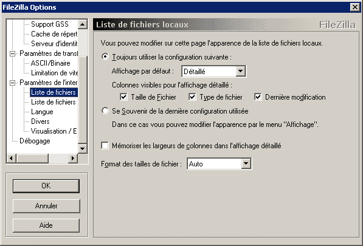

Liste des Fichiers Locaux
Vue d'ensemble:
Cette section vous permet de configurer l'apparence de la liste des fichiers locaux.

Toujours utiliser la configuration suivante
Si cette option est sélectionnée, l'agencement sélectionné sera utilisé pour la liste des fichiers locaux.
Affichage par défaut
Choisissez l'un des styles suivants pour la liste de fichiers locaux:
Détails - Liste des fichiers avec les détails complets, le style par défaut Liste - Liste seulement les noms de fichiers et affiche leurs icônes, la liste sera déployée horizontalement si elle est plus importante que la taille de la fenêtre de liste Grandes icônes - Liste sous forme de grandes icônes avec le nom de fichier en dessous. Petites icônes - Liste seulement les noms de fichiers et affiche leurs icône, dossiers déployés verticalement Colonnes visibles pour l'affichage détaillé
Spécifie les colonnes qui seront visibles en relation avec la liste détaillée. Utile si vous ne voulez pas afficher tous les détails.
Se souvenir de la dernière configuration utilisée
Cette option sélectionnée, FileZilla mémorisera l'agencement du cadre de la liste des fichiers locaux à la fermeture et restaurera cet agencement au prochain lancement.
Mémoriser la largeur des colonnes dans l'affichage détaillé
Cette option activée, FileZilla mémorisera la largeur des colonnes du cadre de la liste des fichiers locaux dans le mode d'affichage détaillé.
Format de tailles de fichiers
Spécifie sous quel format la taille des fichiers sera affichée. La taille peut aussi bien être affichée en bytes, KB et MB. Avec le mode Auto, FileZilla tient compte de la taille de fichier pour s'adapter au plus petit affichage: un gros fichier pouvant entraîner une grande chaîne à afficher, FileZilla utilisera les KB ou MB dans ce cas.